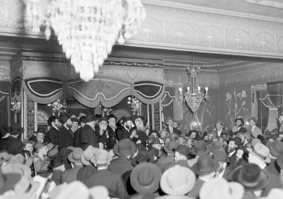

The Public Farbrengens Outside 770
For six years, the Rebbe held his large farbrengens in four spacious halls in the vicinity of Crown Heights. * This began with the big farbrengen of Yud-Tes Kislev 5714, when the small zal of 770 was too small for the crowd. It ended in 5720 when the first phase in the expansion of 770 was completed

Not many Chassidim remember the farbrengens of the early years of the Rebbe’s nesius. This is not only because they occurred so long ago, but mainly for the simple reason that in those days only a few dozen Lubavitcher families lived in Crown Heights.
For the big farbrengens that took place on weekdays, on Yud-Tes Kislev, Yud Shvat, and Purim, Anash came from all over New York and even from Montreal. Still, they were no more than a few hundred people. The small zal on the first floor of 770 was large enough.
Over the years, many more Lubavitcher families joined Anash in New York, especially in Crown Heights. At the same time, Chabad outreach work in cities near New York increased the number of Chassidim. Slowly, the small zal became too small to contain the many Chassidim who wanted to attend farbrengens. Latecomers had to stand in the adjoining room and hall, but soon there were times that there was no room even there. The crowding in the zal was unbearable and many present could not concentrate on the holy words of the Rebbe.
The Vaad HaMesader (Organizing Committee) in those days, led by R’ Leibel Groner, R’ Shneur Zalman Gurary, and R’ Shmuel Zalmanov, suggested holding the large farbrengens in various halls located in the vicinity of Crown Heights. This was to enable participants to attend comfortably. The Rebbe gave his approval to the idea.
Until then, when the farbrengens took place in the small zal, there was no need to inform anyone of the location of the farbrengens. Once the farbrengens began taking place in halls, ads had to be placed in the newspapers to announce the location.
One can see ads placed by the committee in the Yiddish Der Tog Morgan Journal with the listing of the time and place the farbrengen would be held. The ads also specified how to reach the hall and stops where special buses would pass and pick up those who wanted to attend a Chassidishe farbrengen with the Lubavitcher Rebbe. These ads were usually placed a day before a farbrengen but sometimes they appeared on the day of the farbrengen.
Minutes before the designated time, the Rebbe would enter the private car of a Chassid or a taxi, and drive to the hall. He was followed by hundreds of Chassidim and mekuravim who mostly traveled on the organized buses. Most people did not own their own cars.
This arrangement went on from 5714 until 5720, when the inner courtyard of 770, which had been used for parking until then, was refurbished. Since then, all the big farbrengens have been held there.
The Rebbe farbrenged in four halls. The reason they moved from hall to hall, say Chassidim, is that some owners of halls did not want additional farbrengens since they were afraid the hall would collapse from the dancing.
FRANKLIN MANOR
The first such farbrengen, on Yud-Tes Kislev 5714, was held in Franklin Manor. The hall is located on the second floor of a large building on the corner of Union Street and Franklin Avenue and contains about 400 seats. Relative to the small zal, it was considered a very large hall, but due to the advertising in the papers, many mekuravim showed up who refrained from attending previously since they feared they would not be able to see or hear the Rebbe without pushing.
Three years later, another farbrengen took place in this hall on 20 Kislev 5717. The Chassidim whom I spoke to, in my preparation for this article, remember the sharp words of the Rebbe about the klipa of our times in the form of luxuries.
In those days, the area bustled with Jewish life and hundreds of Jews lived there. Today, only few Jews live there, who maintain a shul located near the hall.
THE BALTIMORE HALL
The Baltimore hall is located between Flatbush and Bedford Avenues, in a completely black area. The hall is the furthest one from 770 in which farbrengens took place. It used to be on the ground floor but the building is no longer there.
When looking at the ads that the committee placed about farbrengens in this hall, you see an interesting thing. The hall was on Church Avenue; since they didn’t want to mention the name of the street, they avoided it altogether and instead referred to a high school as a point of reference between Flatbush and Bedford Avenues.
This hall is where a Yud Shvat farbrengen took place for the first time, in 5714. Afterward, they held the Yud Shvat 5717 and the Yud Shvat and Purim 5719 farbrengens there.
At the Purim 5719 farbrengen there were “giluyim” (lofty revelations) and the bachurim of that time remember the unusual statements of the Rebbe about the feeling of v’niflinu (being different) that they ought to have. In the middle of the farbrengen, the Rebbe announced that as is customary, he would say “Purim Torah” and towards the end of the farbrengen there were many pronouncements directed at specific people who were present.
GAYHEART
The hall closest to 770 is the Gayheart hall, which is on the corner of Eastern Parkway and Nostrand on the second floor of the building. The farbrengens on Purim 5715 and Yud Shvat 5716 took place there, and then the farbrengens of Purim 5717 and Yud-Tes Kislev 5718.
The first farbrengen that took place there is etched in the memories of the participants. It was Purim 5715 and in the middle of the farbrengen, the Rebbe began speaking about those who complain about avoda with mesirus nefesh, who say it would be far better if everyone had material plenty.
The Rebbe explained that when there is excessive gashmius, it is liable to interfere with ruchnius, as we’ve seen with some wealthy people that the test of wealth is a big one indeed. It requires much effort to withstand the test of wealth, and as per what it says in Tanya, it requires meditation of several hours.
The Rebbe paused and then said: Nevertheless, may Hashem give all Jews wealth and may there be exertion of soul and body and the need for meditation for several hours in order to counter the challenge.
After a short break, the Rebbe said with a smile: In America, everything is voted upon, and so all those who agree to have outstanding wealth and who don’t care about the effort, should raise their right hand in sincerity.
The Rebbe waited a bit. Only a few people raised their hand. The smile disappeared and in a pain-filled tone the Rebbe said: Afterward, they complain that this is lacking and that is lacking. When there’s an auspicious moment from above, they make ‘Chabad’ske shtusim’ (foolishness). What can I do with you? When it comes to gashmius, they are willing to take risks on a maybe or even the possibility of a maybe, perhaps something will come of it, and when there’s a farbrengen with more than a minyan of Jews, and it’s an auspicious moment, they don’t take advantage. It’s a matter connected with Hashem Himself and they miss the opportunity, as long as they are called ‘baal mochin’ (men of intellect). What can I do? It won’t interfere with ruchnius and there will be more time and energy to work in this physical world to strengthen Torah and mitzvos.”
Those who raised their hand at that Purim farbrengen became very wealthy. Those who attended the farbrengen, as well as their children, know who they are.
Speaking of heavenly matters, the Yud Shvat 5716 farbrengen is also memorable to the participants. The Rebbe said that some ask why we don’t see miracles nowadays in the same way as there were in the times of earlier N’siim. The Rebbe responded with something amazing and pertinent to recent years: Those who believe in miracles see miracles. As for those who decided they are taking the natural route, we won’t “break” their path, and consequently they don’t see miracles.
On Yud-Tes Kislev 5718 there was a special and very joyous farbrengen. During the farbrengen, the Rebbe held an appeal for Kfar Chabad Beis which the Rebbe called “a new neighborhood in Kfar Chabad.” The Rebbe asked that everyone give according to his means and beyond his means.
The Rebbe added: Since this appeal (on Yud-Tes Kislev) is unusual, there will be something else unusual about it. With every other appeal, I take what I am given, whether I am satisfied with the amount or whether I think the person should have given more. This time, if I see that someone should have given more, I will tell him how much to add!
The Rebbe promised: Regarding tz’daka in general it says, “Test Me please in this,” especially with tz’daka for Eretz Yisroel which takes precedence, and especially when this is associated with Yud-Tes Kislev, the day marking the Geula of the Alter Rebbe, surely Hashem will repay each person many times over, at least four times the amount given! And they will see this with their own eyes.
After finishing the sicha, everyone gave the Rebbe a card with an amount written on it that they pledged to give. The Rebbe told many of them to give double or triple or even four times the amount.
Regarding one Chassid the Rebbe said: He needs success, so he should give several times over! (The Rebbe specified how much he should give). Regarding another Chassid, the Rebbe said: He needs parnasa, so he should give several times over! Regarding one of the Chassidim (about whom the Rebbe said that he should double and triple the amount) the Rebbe said: I don’t know where he will get that amount of money, but it says, “The silver is Mine and the gold is Mine.” To another Chassid the Rebbe said: We will demand the sum from the Alter Rebbe.
Throughout this time, the Rebbe was very joyous and he started a number of niggunim in between announcements.
When the appeal was over, the Rebbe announced: I want the payments to begin tomorrow on Friday, 20 Kislev (Erev Shabbos Parshas VaYeishev) until Shabbos comes in, so that it will still be connected with Yud-Tes Kislev. And the Rebbe announced several times: Today is Yud-Tes Kislev which is an auspicious time.
THE ALBANY MANOR
Albany Manor was on Albany Avenue, on the corner of Rutland, in a one story-building which today appears abandoned. The Yud Shvat and Purim farbrengens of 5718 and Yud-Tes Kislev 5719 took place there, and apparently all the farbrengens of 5720.
Special farbrengens took place in this hall, with Purim 5718 being one of the famous ones. This farbrengen is remembered as one with wondrous giluyim and statements not usually said at regular farbrengens.
At the beginning of the farbrengen, the Rebbe spoke about the obligation every Chassid has to work on avodas ha’t’filla. The Rebbe said what he heard from the Rebbe Rayatz at a Purim farbrengen about a Chassid in Lubavitch who was a very simple man. It was hard to believe that he understood the simple meaning of the words of the davening. However, surprisingly, this Chassid would daven at great length and not only on Shabbos and Yom Tov but on ordinary weekdays as well, and not only for Shacharis but also for Mincha and Maariv!
People in shul asked him what took him so long. His answer was that he heard an aphorism from the Alter Rebbe as follows: It says “Zachor V’Shamor B’dibbur Echad,” which means that every utterance and every action must be carried out with the “echad” within it, i.e. G-d must be felt in everything. Said the Rebbe Rayatz, this Chassid davened with this saying for many years!
The Rebbe took a lesson from this for all Chassidim that every Chassid can daven with avoda. The Rebbe said that this is clear proof that every Chassid, no matter his level, is capable of avodas ha’t’filla.
The Rebbe then asked for someone to volunteer to be “Ad D’lo Yada” for everyone. The farbrengen lasted until late into the night. Most of the crowd left the hall and only a few dozen people, Anash and bachurim, remained around the Rebbe’s bima and sang. At a certain point, they began singing “Rachmana D’Anei L’Aniyei,” and the Rebbe asked why they didn’t sing a happier niggun and he began singing the tune to which, in recent years, Yechi is sung.
As they sang, the Rebbe said some highly unusual things to some of Anash. The Rebbe spoke very slowly and in an unusual manner (this can be heard on the tape). From some of them, the Rebbe demanded that they work on themselves on certain matters. To some, he said they should say l’chaim over a big cup, and so on and so forth, with unusual expressions.
An important guest was present at the Purim farbrengen 5720, Mr. Shneur Zalman Rubashov, known as Shazar. R’ Leibel Groner, the Rebbe’s secretary, described that farbrengen:
“It seemed that Shazar’s participation in the farbrengen, sitting not far from the Rebbe, greatly pleased the Rebbe and resulted in certain things being said that were directed primarily at Shazar. For example, the Rebbe spoke sharply about the meaning of ‘You chose us from all the nations,’ and it was apparent that this was in reaction to things that were said by members of the Israeli government (Ben-Gurion suggested removing ‘Ata V’chartanu’ from the davening).
“The Rebbe also spoke explicitly, though without mentioning a name, about the guest’s connection with the publication of the writings of the Alter Rebbe.
“I also remember that when they sang the Alter Rebbe’s Dalet Bavos, one could see that Shazar was moved. He dropped the walking stick that he held, straightened up, fixed the button on his coat, closed his eyes and began swaying in d’veikus. That farbrengen lasted nearly eight hours and Shazar was there from beginning to end.”
R’ Groner also said that Shazar left the farbrengen in great amazement over the Rebbe speaking for eight hours on one topic.
Yisroel Yehuda. "The Public Farbrengens Outside 770." Beis Moshiach, no. 862 (December 27, 2012).